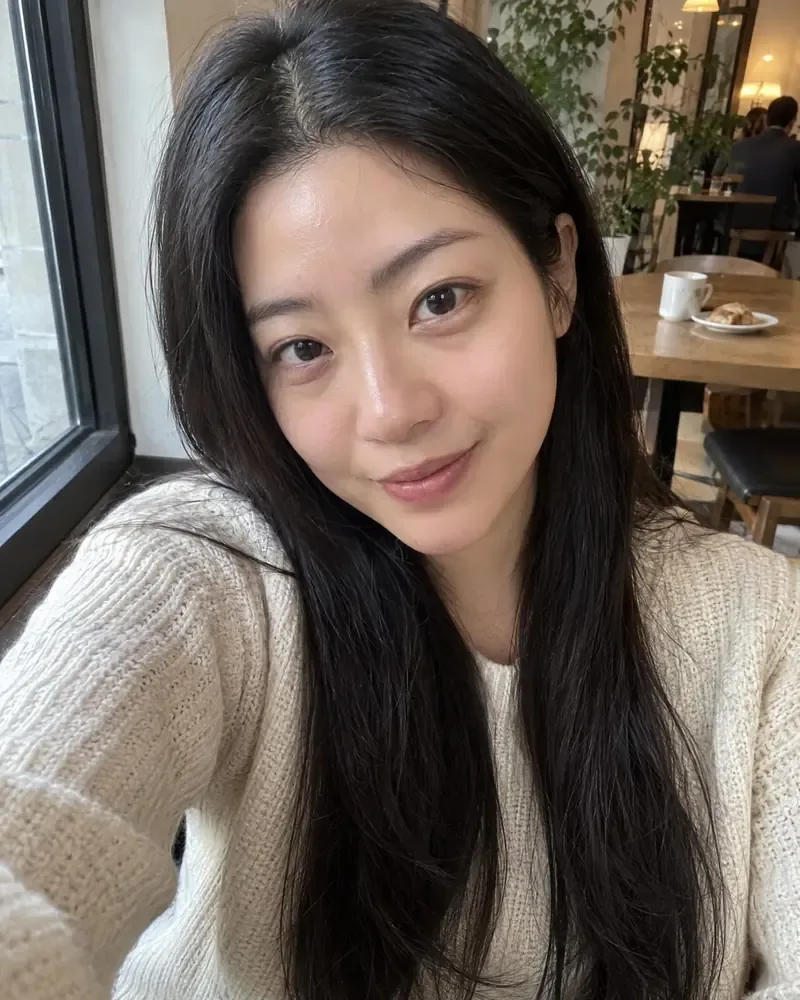

嘉Jaykou工具台 · 面部修饰 照片保存在您的设备上
每日 免费 3 次
免费面部修饰微妙重塑，自然效果。


BEFOREAFTER柔和效果瘦脸和下颌线，调整下巴、额头和鼻子，让眼睛稍微大一点并抬起微笑。
变化跟随面部并在周围渐隐，内置限制以防止任何变形。
Face, eyes & smileBuilt-in limits免费，就在你的浏览器里
游客每日 3 次 无需上传 无水印
选择一张图片
拖到这里、粘贴，或点击浏览
或点击选择文件
人脸美化（磨皮 / 瘦脸）
肤色检测（YCbCr 阈值）→ 只对肤色区域做双边磨皮 + 频率分离（保留细节层），可选局部瘦脸变形与亮眼美白。
磨皮强度
保留皮肤质感
提亮 / 美白
✓只处理肤色区域
瘦脸强度
面部中心 X (%)
面部中心 Y (%)
影响范围 (%短边)
✓亮眼（提亮高光）
能力边界：本页不检测人脸关键点（那需要专门的模型）。磨皮作用于「肤色像素」，用 YCbCr 阈值 + 频率分离实现；瘦脸是围绕你指定中心的局部径向变形，不是基于五官定位的整形。对常规人像效果好，但对低光、偏黄灯光、大面积非肤色背景可能误判，建议配合「皮肤质感」滑块使用。
输出：—
全部在浏览器本地完成，图片不会上传。
修图在你的设备上运行，照片永不上传。按住 \ 对比 · Ctrl+Z 撤销
EXAMPLES
看看一个示例人像
不存在的人的肖像，随时准备尝试。将鼠标悬停或点击闪光以查看结果，然后打开一个并选择你的外观。
使用说明
面部修饰怎么用？4 步就能上手
面部修饰会自动完成处理：导入素材，选好模式，几秒钟就能看到结果。 免费修饰照片中的面部：瘦脸和下颌，调整下巴、鼻子、眼睛和微笑，美白牙齿和平滑皮肤。
1
导入素材
选择或拖入图片、视频或音频，等待浏览器读取完成。
2
选择处理模式
按需选择风格或强度，例如清晰度、风格化程度、输出倍率等参数。
3
开始处理
点击处理按钮，界面会显示进度；素材较大时请保持页面打开。
4
预览并保存
对比处理前后的效果，满意后下载；不满意可以换个模式再试。
· 处理在你的设备上完成，素材不会上传到任何服务器。· 强度不是越高越好，中等设置通常最自然。
嘉Jaykou工具台
这些也在你的浏览器里完成
无需注册即可试用，游客每日 3 次免费。所有处理都在你的设备上完成，文件不会被上传。
- 490 个免费工具
- 图片 · 视频 · PDF · 文本
- 每日免费额度
所有工具每天都有免费额度。 游客每日 3 次免费，注册再送 20 积分。文件不上传，处理全在你的设备上完成。
常见问题
我如何在网上瘦脸？
打开你的肖像，进入“面部”标签，然后稍微提高“瘦脸”或“下颌线”，然后使用“比较”进行检查。它是免费的，可以在浏览器中运行，并且不需要注册。
背景会保持直吗？
是的。形状变化会随着面部变化并在周围消退，内置的限制可以保持背景看起来自然。少量使用效果最自然。
我能改变什么？
脸宽、下颌线、下巴长度、额头高度、鼻宽、眼睛大小和距离、嘴宽和微笑，以及皮肤、牙齿和化妆。
它对侧脸有效吗？
是的。修改会遵循面部可见的一侧，因此斜角肖像也能获得自然的修饰效果。
它是免费和私密的吗？
是的。游客每日 3 次，无水印，照片保存在你的浏览器中。
更多像这样的免费工具
免费工具

免费面部修饰
Face, eyes & smile · Built-in limits · Free, in your browser